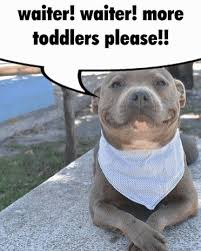
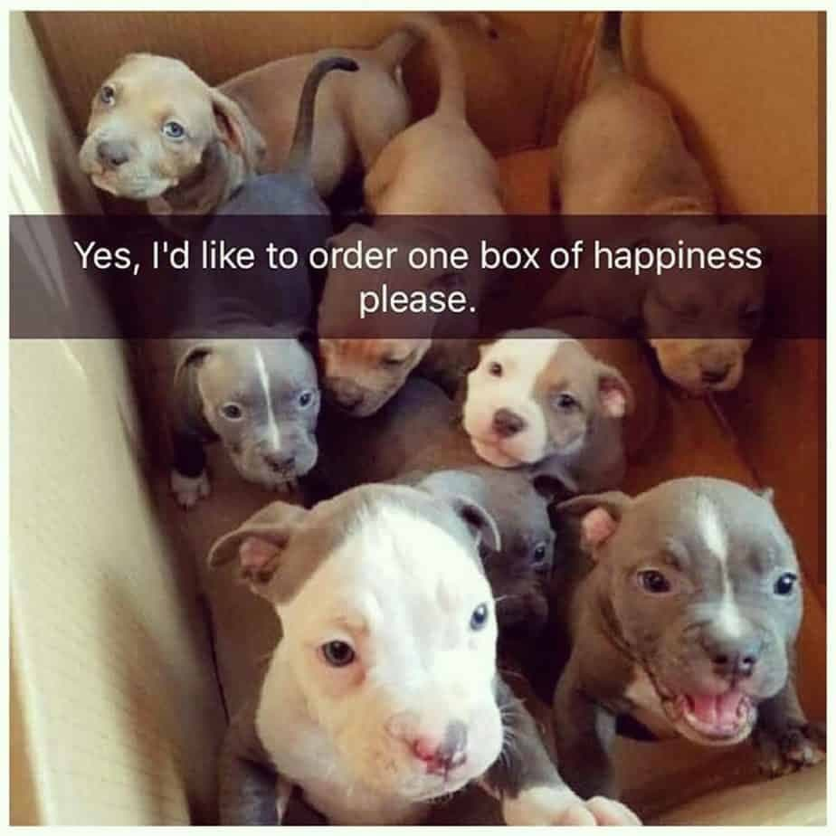
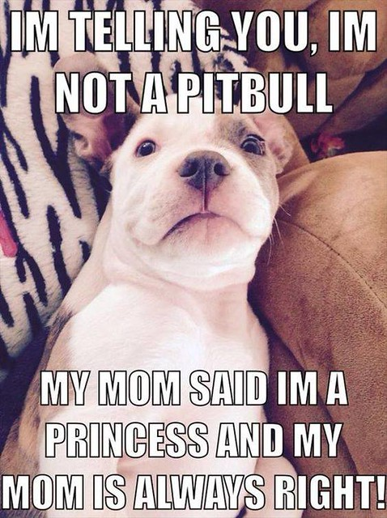

 |  |  |
Pitbull memes have become a vibrant and peculiar fixture in internet culture, blending humor, irony, and pop idolization into one endlessly remixable phenomenon. At the center of this trend is the rapper Pitbull—aka “Mr. Worldwide”—whose image in suits, sunglasses, and confident poses has become the face of everything from absurd globe-spanning captions to surreal AI-generated memes. Originally mocked for his over-the-top musical style and clichéd lyrics, Pitbull was ironically embraced by internet communities such as 4chan and Reddit, transforming him into a beloved meme character through exaggerated praise and tongue-in-cheek hero worship. The “Mr. Worldwide” meme in particular amplifies his global persona to comic extremes, often inserting him into historical events or international scenes with dramatic flair. Meanwhile, pitbull dog memes range from wholesome (like the viral smiling pitbull named Maddy) to dark satire, such as the controversial “pitbulls vs. toddlers” genre that plays on internet shock value. These memes reflect a deeper duality in online culture—where one figure can be both mocked and idolized, and where a dog breed can be depicted as both lovable and dangerous depending on the meme’s tone. Community responses to pitbull memes are equally varied: some people celebrate the dog breed’s loyalty and sweetness, while others critique the glamorization of potentially dangerous stereotypes. In Pitbull’s case, his consistent image and catchphrases (“Dale!”) make him especially memeable, and fans have even started wearing bald caps and suits to his concerts in tribute to the meme persona. Ultimately, Pitbull memes highlight the strange power of digital fandom, where music, identity, irony, and humor collide to create a lasting internet icon whose influence spans both culture and comedy. |